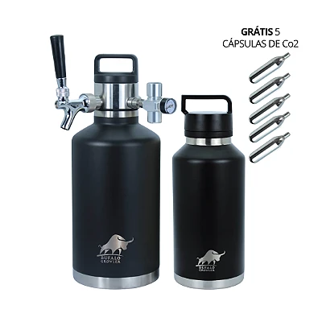

BÚFALO ON TAP · COM VOCÊ, LÁ FORA.
Seu próximo
brinde.
Do seu jeito.
Encontre a chopeira que combina com seus planos. Da conversa a dois à manada reunida.
Encontre sua On TAPSeu bar vai com você.
VÁ DIRETO AO QUE VOCÊ GOSTA
Já sabe o que procura?
Conheça a linha pelo seu jeito de servir.
Explore os nove produtosEM CADA DETALHE. EM CADA GOLE.
Qualidade
que se prova.
Rafael Cheruti apresenta a On TAP e mostra o ritual de servir com pressão.
Escolha sua chopeiraRafael Cheruti é sommelier de cervejas, mestre em estilos e criador do Método Cerveja Descomplicada.
Perfil profissionalENCONTRE SUA COMPANHIA
Diferentes planos.
A mesma vontade de brindar.
Quatro chopeiras. Dois combos. Dois growlers.
E uma bag para levar seu próximo encontro.


CHOPEIRAS · 2 L
On TAP 2 L
Chope na torneira. Onde você estiver.
- Sistema de 2 L com dispensador
- Regulador com manômetro
- 5 cápsulas de CO₂ de 16 g
Varanda e encontros a dois.
O barril tem 1,9 L; com o dispensador, o sistema tem capacidade de 2 L, conforme a loja.
R$ 1.250,00
Quero minha On TAP 2 LESCOLHA A SUA COMPANHIA
On TAP 3,5 L
A mesma chopeira. Escolha sua cor.
CHOPEIRAS · 3,5 L
On TAP 3,5 L · Preta
Mais chope. O mesmo ritual.
- 3,5 L
- Aço inox 18/8
- 5 cápsulas de CO₂ de 16 g
Churrasco e amigos reunidos.
R$ 1.450,00
Quero minha On TAP preta
CHOPEIRAS · 3,5 L
On TAP 3,5 L · Creme
O brinde combina com a sua casa.
- 3,5 L
- Acabamento creme
- 5 cápsulas de CO₂ de 16 g
Receba bem, sirva do seu jeito.
R$ 1.450,00
Quero minha On TAP creme
CHOPEIRAS · 3,5 L
On TAP 3,5 L · Laranja
Sua On TAP com atitude.
- 3,5 L
- Isolamento a vácuo
- Regulador com manômetro
Destaque para a mesa do encontro.
R$ 1.450,00
Quero minha On TAP laranjaArraste para explorar as opções
ESCOLHA A SUA COMPANHIA
Kits Mestre Cervejeiro
Dois growlers, um kit dispensador e bag de brinde.

COMBOS · 3,5 L + 2 L
Mestre Búfalo · Combo 5,5 L
+ BAG TIRACOLO DE BRINDE
Dois growlers. Mais possibilidades.
- 1 growler de 3,5 L + 1 de 2 L
- 1 kit dispensador
- 5 cápsulas de CO₂ de 16 g
3,5 L + 2 L para variar os planos.
5,5 L é a soma das capacidades dos dois growlers. O combo inclui um único kit dispensador.
Cor: Preto/Preto
R$ 1.730,00
Quero meu kit + bagCOMBOS · 2 × 3,5 L
Mestre Búfalo · Combo 7 L
+ BAG TIRACOLO DE BRINDE
A manada inteira tem lugar.
- 2 growlers de 3,5 L
- 1 kit dispensador
- 5 cápsulas de CO₂ de 16 g
Dois growlers de 3,5 L para reunir a turma.
7 L é a soma das capacidades dos dois growlers. O combo inclui um único kit dispensador.
Cor: Preto/Preto
R$ 1.830,00
Quero meu kit + bagArraste para explorar as opções
ESCOLHA A SUA COMPANHIA
Growlers Kundi
Escolha a capacidade para o seu próximo encontro.

GROWLERS · KUNDI
Growler Kundi 2 L
Abasteça. Leve. Brinde.
- Aço inox 18/8
- Isolamento a vácuo
- Tampa com alça
Seu rótulo favorito vai junto.
Nome comercial da loja: Kundi 2 L. A descrição técnica informa 1,9 L; confirme a capacidade com a equipe antes da compra.
R$ 380,00
Quero meu Kundi 2 L
GROWLERS · 3,5 L
Growler Kundi 3,5 L
Mais espaço para o seu rótulo.
- 3,5 L
- Aço inox 18/8
- Tampa com alça
Leve o chope para o encontro.
R$ 480,00
Quero meu Kundi 3,5 LArraste para explorar as opções

ACESSÓRIO · TRANSPORTE
Bag Tiracolo para Chopeira
Seu growler vai de mãos livres.
- Lona de PVC
- Alça regulável
- Ombreira acolchoada
Alça regulável para o próximo destino.
Acessório de transporte. Confira os itens inclusos e a compatibilidade na página do produto.
R$ 168,00
Quero minha bagA PRÓXIMA HISTÓRIA COMEÇA AQUI.
Qual vai ser
o seu próximo encontro?
Escolha sua Búfalo. O destino é com você.
Ver a linha completa na lojaKit Mestre Cervejeiro + Bag Tiracolo de brinde.